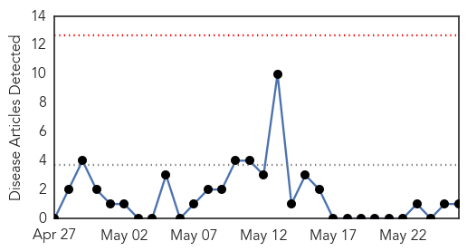
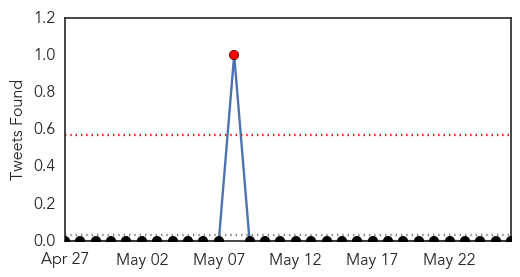
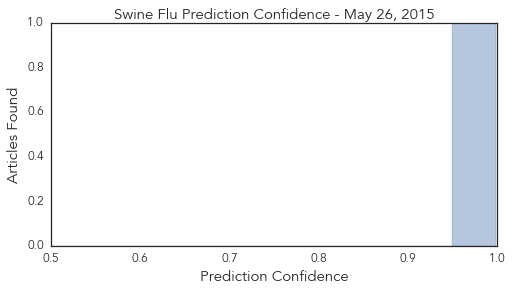
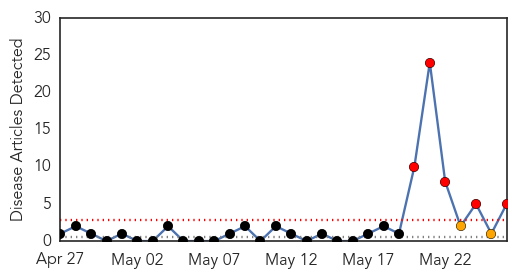
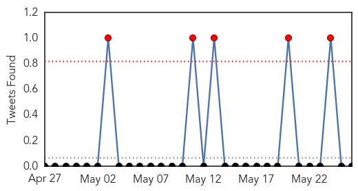
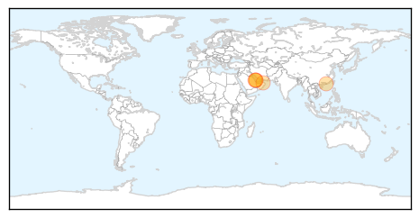
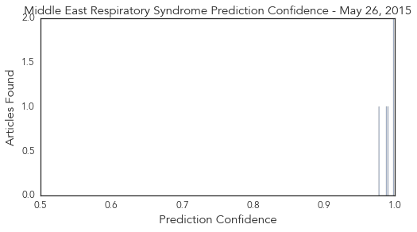

Swine Flu
30-Day Web Trend
0 alerts, 0 warnings

30-Day Twitter Trend
1 alerts, 0 warnings

Article Locations

Article Confidences
Top Articles:
Top Tweets:
-
No tweets found for May 26, 2015
MERS
30-Day Web Trend
5 alerts, 2 warnings

30-Day Twitter Trend
3 alerts, 0 warnings

Article Locations
Article Confidences
Top Articles:
- 0.998
- First Cases of MERS-CoV in Republic of Korea are Reported to WHO
- 0.998
- DH closely monitors five additional MERS cases
- 0.990
- MERS virus continues to spread in South Korea
- 0.988
- Korea: Additional MERS case reported, brings total to 4
- 0.977
- WHO is Notified of Six Cases of MERS-CoV in Qatar, Saudi Arabia and United Arab Emirates
Top Tweets:
- 0.627
- AFD Blog `@WHO MERS-CoV Update – Saudi Arabia' http://t.co/3m21lk3Obz
- 0.531
- AFD Blog `Korea: Confirmation Of 5th Positive MERS Case' MERS-CoV http://t.co/U3ubGv6rQJ
- 0.501
- AFD Blog `Saudi MOH: 1 New MERS Case In Taif' MERS-CoV http://t.co/7YzUJIkDM5